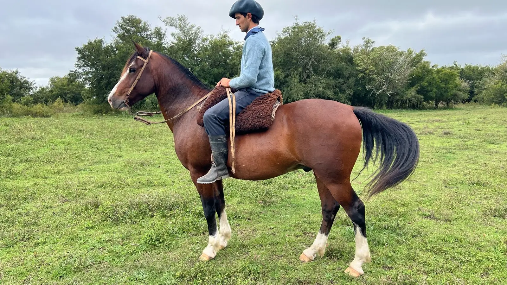
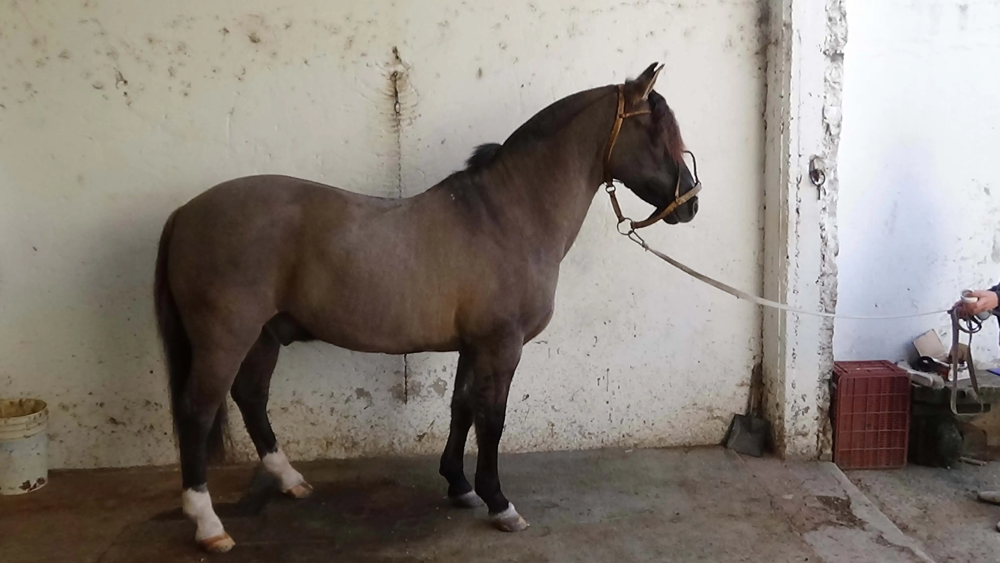
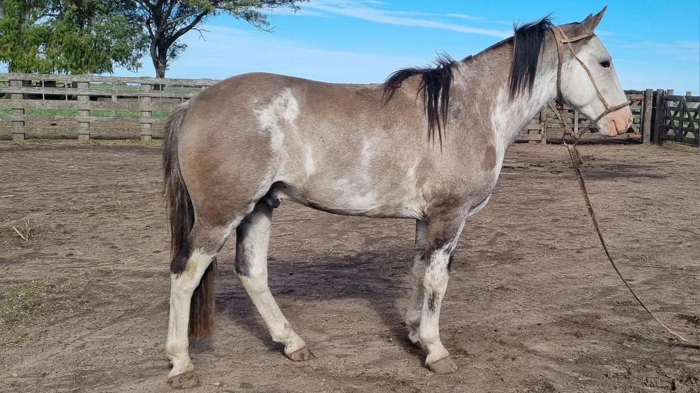

Caballos en venta
Caballo Criollo Puro Colorado
$1.500.000
Criollo colorado puro registrado, Crisol Tramposo, RP42. Garandito de manso y funcional, ideal para aparte campero. De poncho y de lazo, trabajan con la vaca. De 11 años. Se encuentra en Gomez, partido de Brandsen, pcia de Bs As. Los pueden venir a probar y revisar, esta sanito. Se entrega con la documentación al día.
Caballo Criollo Puro Lobuno
1.200.000
Caballo lobuno criollo en venta puro registrado Rp2459, no tenemos los papeles de pedigree. Su edad es de 10 / 11 años, por datos de libreta y por cronometría dentaria. Su alzada real es de 149/50. la libreta dice 146 Excelente estado , invernado Flequillo abundante y cola larga..Gran morfología, destaco aplomos muy correctos , amplitud de pecho, caja toráxica. Ancas muy voluminosas. Manso garantido real y en todo sentido. No es escuela porque tiene genio. Lo maneja un chico , una dama , un anciano. Un jinete experto lo hace bailar. Gran doma detras de las vacas en el viejo Mercado de Liniers. Gran boca, funcional , guapo y elegante
Padrillo Criollo Puro
2.000.000
Padrillo Overo Lobuno mestizo de Criollo, 3,5 años, alzada 1,47 cm aproximadamente. Buena conformación muscular, correcto de aplomo, sanito sin cicatrices. Ojos pigmentados lo que evita los problemas de irritación. Desconfiado de abajo hasta que te arrimas, luego es manso y no es flojo de cincha, con un año de doma de campo.